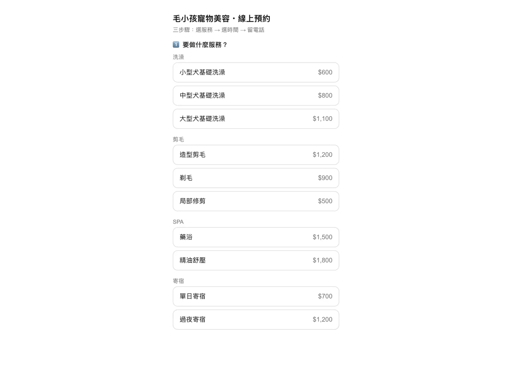
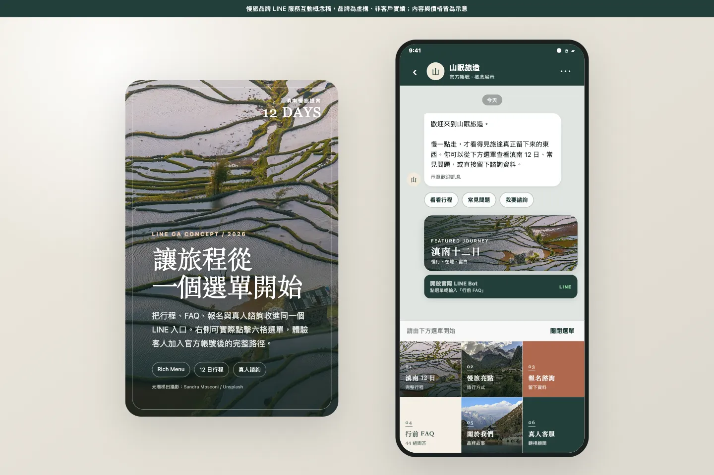
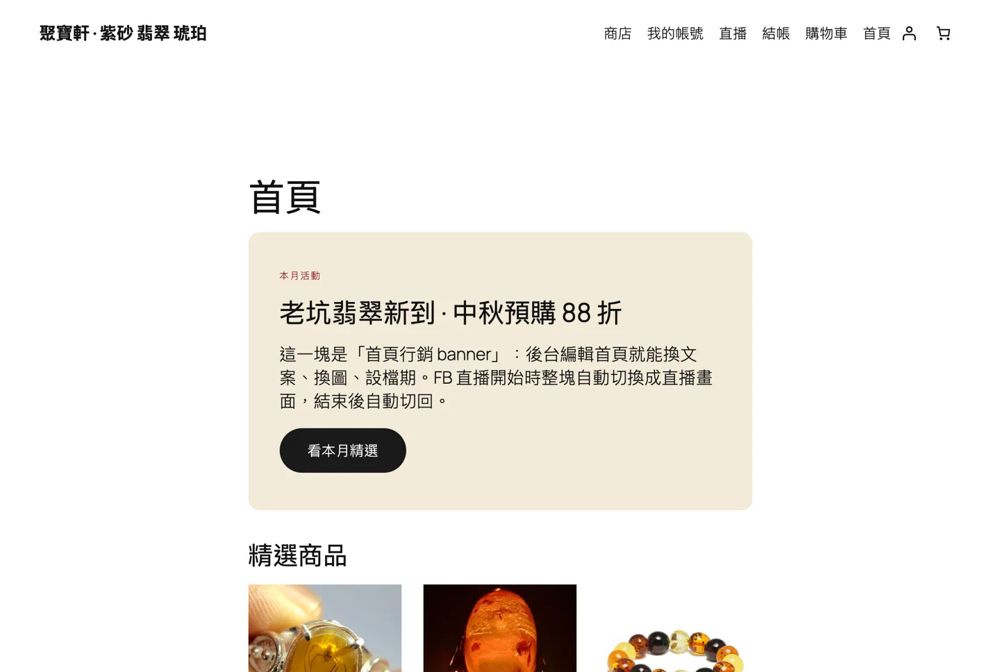
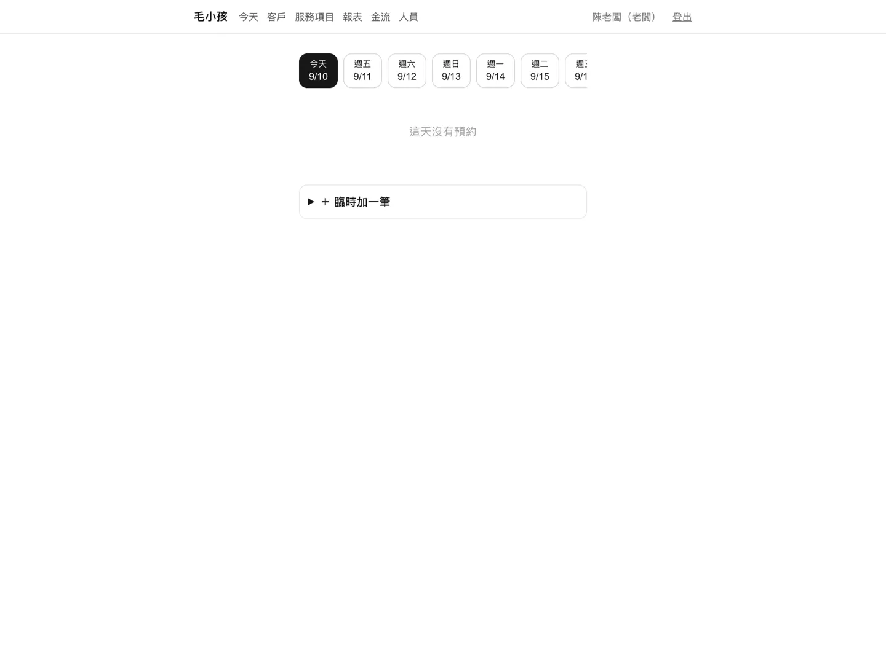
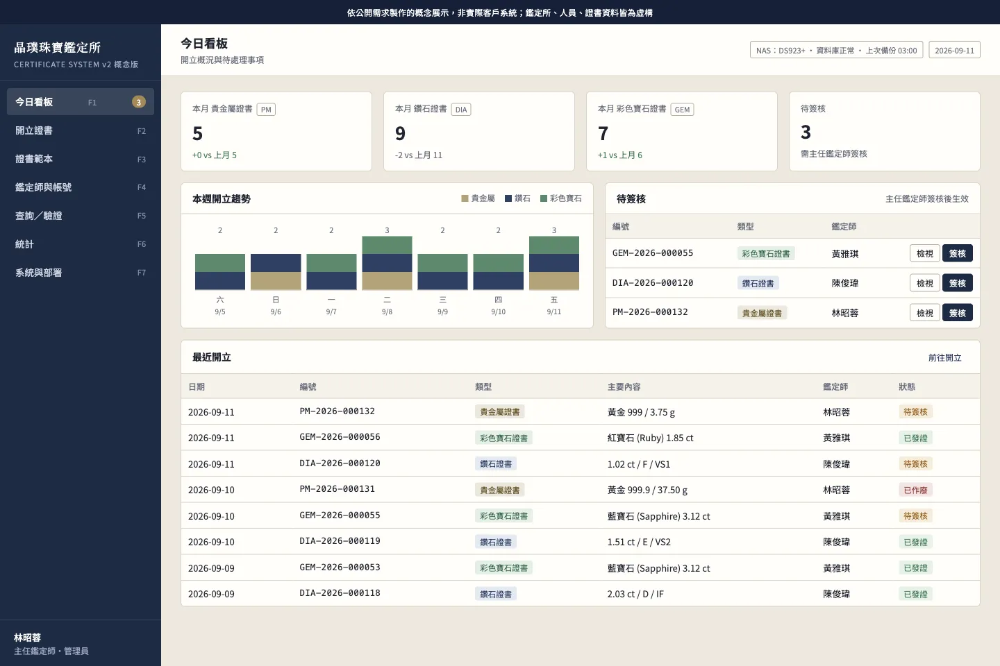
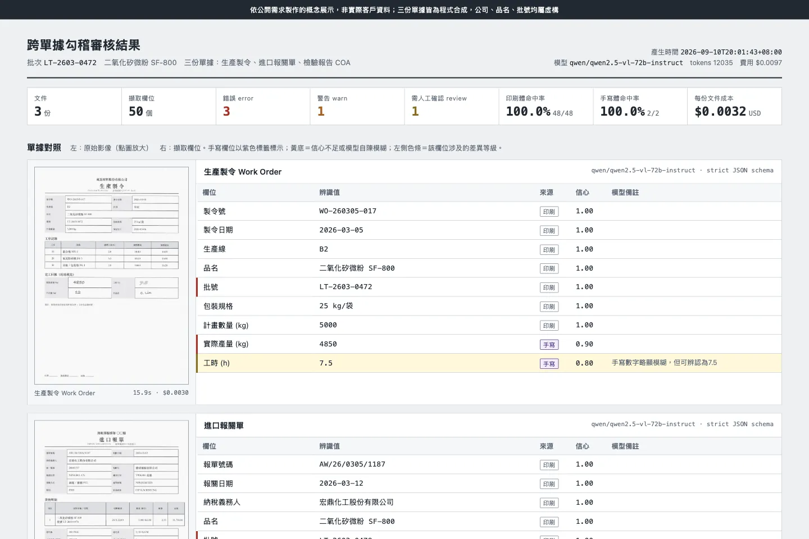
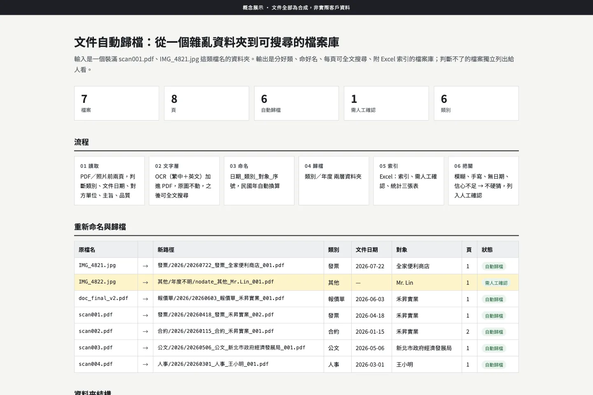

作品與 Demo
每一個都能點開來用。標「上線中」的是真的在跑的系統，可以登入操作；標「概念展示」的是依真實需求做的可互動版本，品牌與資料為虛構。沒做過的東西這裡不會出現。
LINE 整合
-

LINE 官方帳號預約系統客人在 LINE 上選服務、選時段、送出預約；自動確認與前一天提醒。店家後台看今天、客戶、報表、人員權限。開啟預約頁 -

旅遊品牌 LINE 官方帳號六格圖文選單、行程瀏覽、44 組 FAQ 自動回覆、報名表單、真人客服路徑。先用 LINE 內建功能，需要即時資料再接 API。操作看看
電商與後台系統
-

電商網站（含綠界金流、直播模式）WordPress＋WooCommerce，信用卡／ATM／超商代碼，老闆自己上架商品（三張圖＋影片）、改首頁活動、一鍵切換直播模式。後台看客戶來源與商品瀏覽排名。逛逛前台 -

中小企業後台今日看板、客戶紀錄、收款對帳、報表匯出、人員權限與操作紀錄。老闆帳號不可刪、離職一鍵停用並轉移工作、所有設定可匯出成交接文件。後台需登入，示範帳號來信索取。後台登入頁 -

鑑定證書系統三種證書範本可自訂欄位、開立與列印、鑑定師簽名檔與帳號、公開驗證頁、統計匯出。含舊系統資料整併流程與 NAS 部署說明。操作看看
AI 文件處理
-

跨單據 AI 勾稽製令、報關單、檢驗報告掃描件（含手寫欄位）自動擷取，跨文件比對數量、批號、規格、金額；不一致與模糊處標出，輸出差異報告 Excel。埋入的三處錯誤全部抓到。看報告 -

文件自動歸檔雜亂掃描檔自動分類、命名、加可搜尋文字層、歸入類別／年度資料夾，附 Excel 索引。手寫、模糊、看不出日期的不硬猜，列給人確認。看結果
網站設計
已交付的 AI 專案（去識別）
- 人資問答機器人一間上市化工製造商的 HR FAQ，掛在通訊軟體上。小規模知識庫不上向量資料庫，輸出端做來源驗證；四週交付，附回歸測試逐題驗收。
- GMP 品質紀錄審核一間生物製藥廠的結構化品質紀錄，AI 做四軸嚴格相等比對，標出偏差。停在客戶驗收關卡，未取得上線後數據。
- 法規與實驗數據問答製藥領域研發與品保單位：上傳文件向量檢索＋資料庫寫死查詢模板，單一入口路由。已上線運行。
- WhatsApp Cloud API 收發環境Business Manager、WABA、Webhook 簽章驗證、永久 token、收發與狀態回報全程跑通，含案主可照做的設定手冊。
概念展示的品牌、人員、行程與價格全為虛構。已交付專案依保密約定不具名；要引用細節請先聯絡我們。想看哪一個的細節或約 15 分鐘電話，到 服務項目 頁面找聯絡方式。